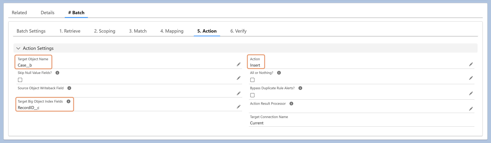

When the target is a Salesforce Big Object, DSP supports two operations:
- Insert — Adds new records. If a record with the same index fields already exists, Salesforce overrides it (this is standard Big Object behavior, even with Insert).
- Delete — Removes records based on the index fields.
The Target Big Object Index Fields must be configured for either operation to run correctly.
